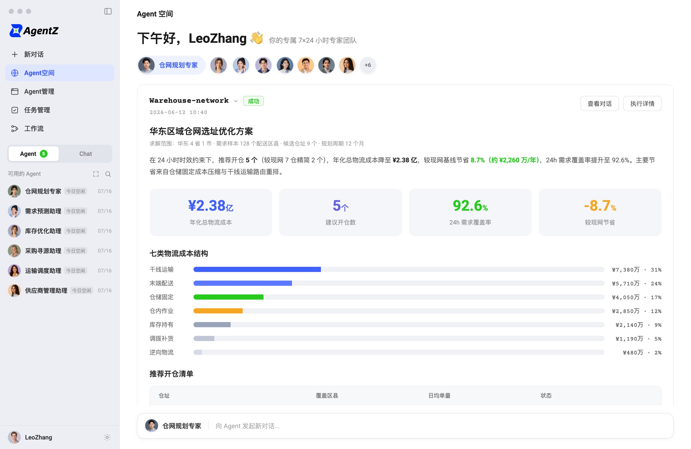

定义岗位
明确 Agent 的职责、业务目标、交付标准，以及哪些事项需要向人汇报。
CASE STUDY / SUPPLY CHAIN AGENT / 2026
Agent Z · 面向供应链岗位的 Agent 协同平台

01 / PRODUCT PROBLEM
订单、库存、履约、仓配和异常处理通常分散在不同系统和团队里。Agent Z 的产品方向，是把供应链专家能力配置成岗位 Agent，让它们围绕真实任务持续工作，而不是只停留在单轮问答。
02 / PRODUCT MODEL
Agent Z 官网将产品定位为供应链 Agent 协同平台：围绕计划、采购、订单、履约、仓储等岗位配置专属 Agent，再连接业务数据、技能与工具，让 Agent 按目标持续推进任务，并把过程和结果交付给团队。
明确 Agent 的职责、业务目标、交付标准，以及哪些事项需要向人汇报。
组合可复用技能、知识和数据，并连接浏览器、MCP、CLI 或企业系统。
理解目标和上下文，调用工具推进多步任务；支持周期或业务事件触发。
沉淀执行记录、报告和待办；涉及关键业务操作时进入人工确认。
从理解需求到调用技能、浏览器和业务工具，把查询、分析与跟进串成连续工作。
由不同岗位 Agent 分工处理子任务，并在 Agent 空间集中查看任务状态、执行记录和汇报。
改价、放货、报关等关键动作保留确认节点，让自主执行有明确边界、过程可追溯。
以上为 Agent Z 官网公开呈现的产品机制；我的具体工作范围见下一节。
03 / MY WORK
目前负责 Agent Z 客户端与存量供应链软件 AI+ 产品；此前负责「生意管家」AI 客户端产品框架设计与商家物流履约 Agent 建设。过去的 WMS 和国际化交付经验，帮助我从业务岗位、系统边界和落地流程理解 AI 产品问题。
围绕岗位 Agent 协同平台的客户端产品工作，连接 Agent 配置、执行过程与结果交付。
推进存量供应链软件的 AI 产品探索，让 AI 能力贴近既有业务场景和工作流程。
负责 AI 客户端产品框架设计，并负责商家物流履约 Agent 建设。
个人职责范围来自简历；产品页面中的完整能力描述代表产品公开介绍，不等同于个人独立完成的功能清单。
04 / PROJECT EVIDENCE
Agent Z 与供应链软件完成数据打通，实现泰国门店全覆盖。
产品在泰国 Makro 全部 157 家门店落地。
真实业务中的持续使用，验证供应链 AI 客户端的使用强度。
以上为 Agent Z 在泰国 Makro 商业化落地的业务数据；我的职责范围见「我的工作」部分。
RELATED CASE
Planogram 项目记录了我如何用 AI 协作完成复杂定制系统的调研、设计与交付。